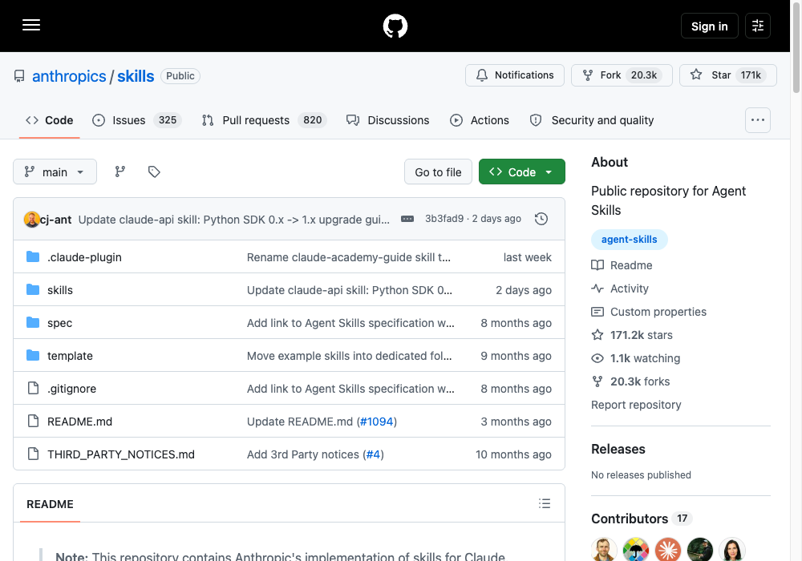
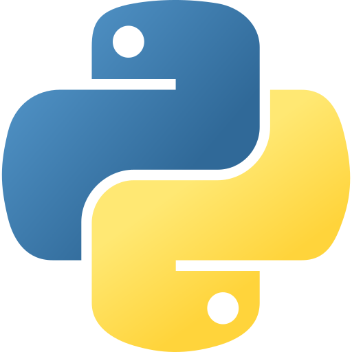
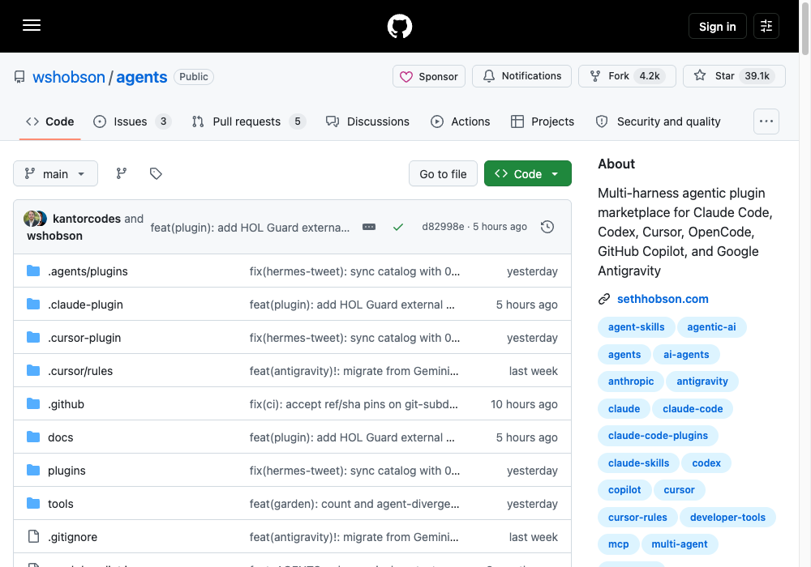
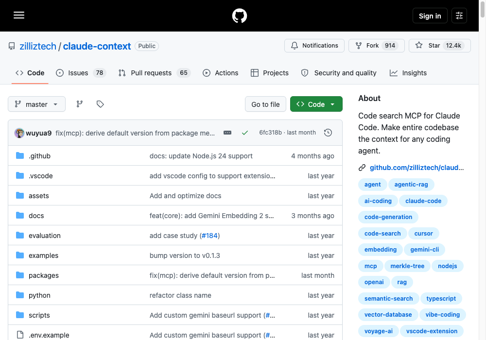
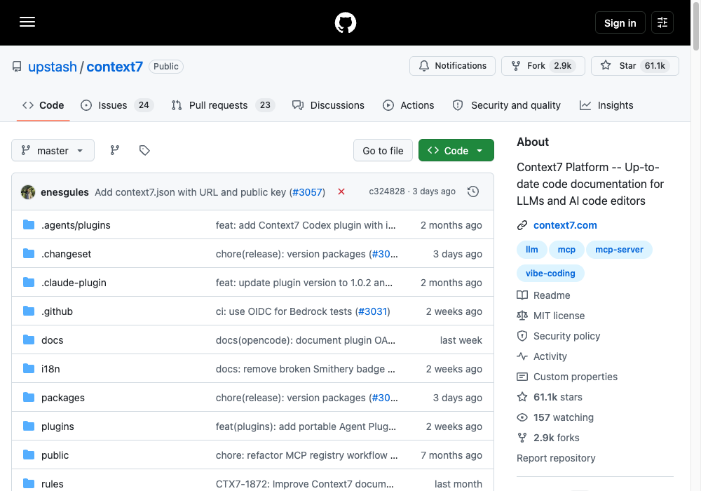
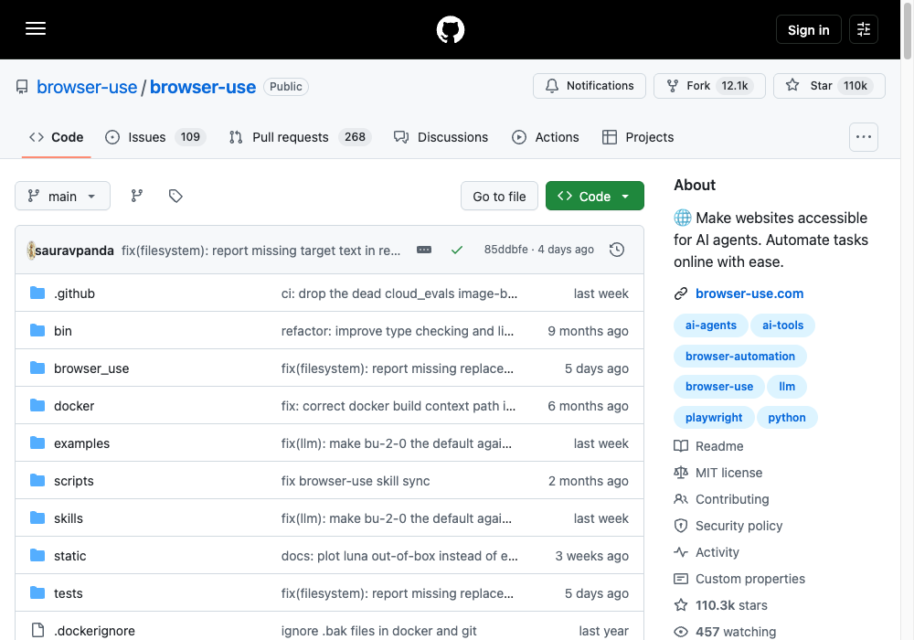
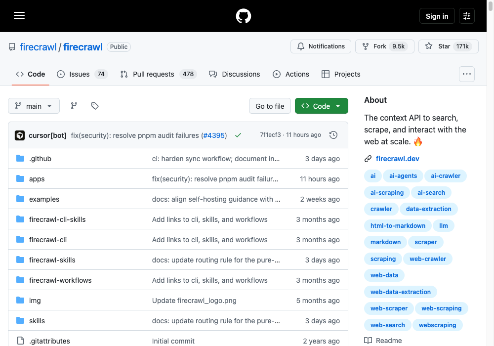
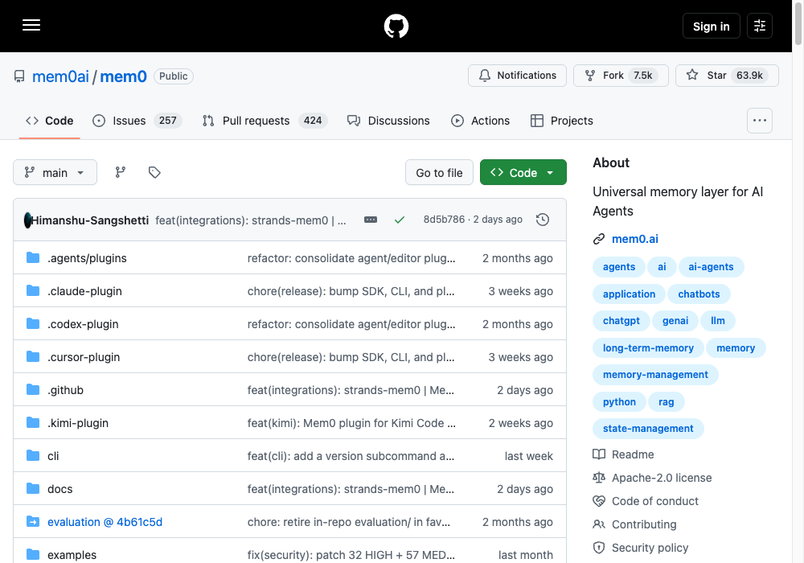

7 repos that make claude better.
The open-source stack behind faster, sharper, longer-memory Claude Code sessions — skills, subagents, search, docs, browsing, scraping, and memory.
#1: skills
Anthropic's official skills repo.


Python ★ 171K MITIf you're not using skills yet, you're leaving most of Claude's specialized performance on the table.
/plugin marketplace add anthropics/skills /plugin install document-skills@anthropic-agent-skills /plugin install example-skills@anthropic-agent-skills
#2: agents
202 subagents, drop-in ready.

Plug specialist agents into Claude Code without writing a single one yourself.
/plugin marketplace add wshobson/agents /plugin install <agent-name>@agents # or: gh repo clone wshobson/agents ~/agents
#3: claude-context
Your entire codebase as context.

Stops Claude from re-reading the same files. Indexes once, searches semantically.
claude mcp add claude-context \ -e OPENAI_API_KEY=sk-your-key \ -e MILVUS_TOKEN=your-zilliz-token \ -- npx @zilliz/claude-context-mcp@latest
#4: context7
Live docs for every library.

Kills hallucinated APIs. Pulls real, version-specific docs into the prompt at runtime.
{ "mcpServers": { "context7": { "command": "npx",
"args": ["-y", "@upstash/context7-mcp@latest"] } } }
#5: browser-use
Give Claude a browser.

Filling forms, scraping behind logins, clicking through flows — all from one prompt.
uv pip install --upgrade browser-use browser-use skill install
#6: firecrawl
Any URL to clean markdown.

One call. Whole site. JS-rendered, paginated, ready to feed straight into Claude.
{ "mcpServers": { "firecrawl-mcp": { "command": "npx",
"args": ["-y", "firecrawl-mcp"],
"env": { "FIRECRAWL_API_KEY": "fc-YOUR_KEY" } } } }
#7: mem0
Claude that remembers you.

Persistent memory across sessions. Stops you repeating yourself every new chat.
pip install mem0ai npm install @mem0ai/memory # TypeScript
Install everything.
Copy, paste, done. One row per repo.
| Repo | Command | Stars | Use it for |
|---|---|---|---|
| skills anthropics | /plugin install document-skills@anthropic-agent-skills | 171K | Repeatable, specialized task instructions |
| agents wshobson | /plugin marketplace add wshobson/agents | 39K | Drop-in specialist subagents |
| claude-context zilliztech | claude mcp add claude-context -- npx @zilliz/claude-context-mcp | 12K | Semantic search over large codebases |
| context7 upstash | npx -y @upstash/context7-mcp@latest | 61K | Accurate, current library docs |
| browser-use | pip install browser-use && browser-use skill install | 110K | Web automation behind logins/forms |
| firecrawl | npx -y firecrawl-mcp | 171K | Turning any URL into clean markdown |
| mem0 mem0ai | pip install mem0ai | 64K | Persistent memory across sessions |
Stars move. Repos don't stand still.
Every repo here is actively maintained — star counts, APIs, and install commands shift fast in this space. Before wiring one in, check the README on GitHub for anything that's changed since this guide was built.